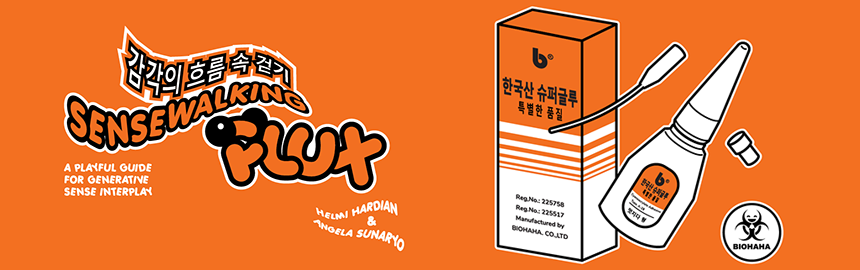
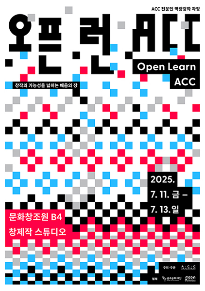
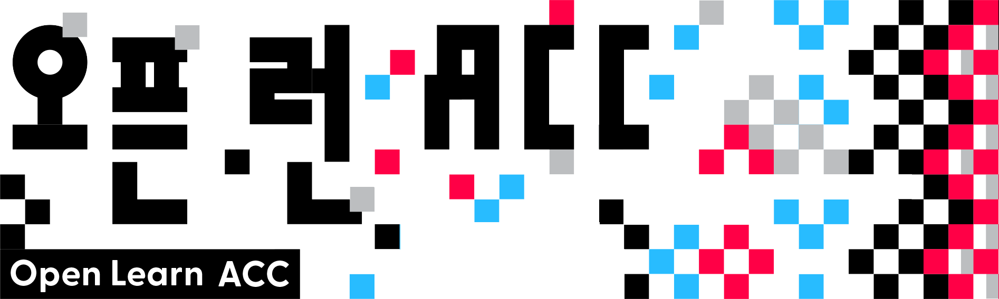
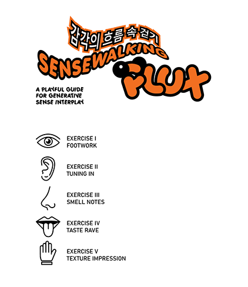
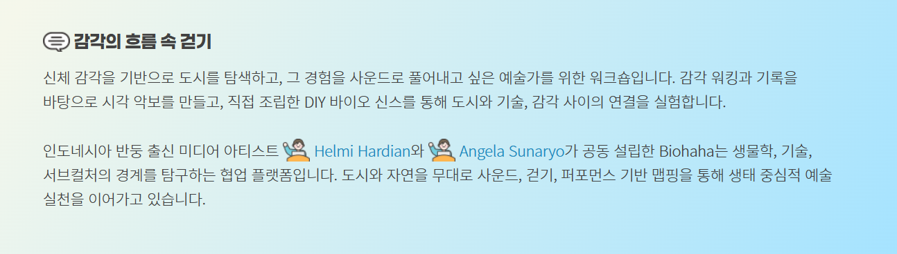
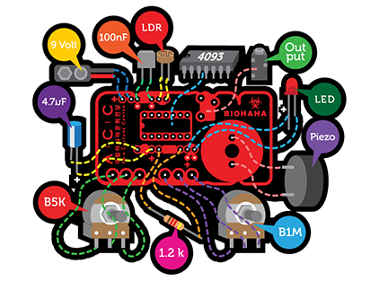
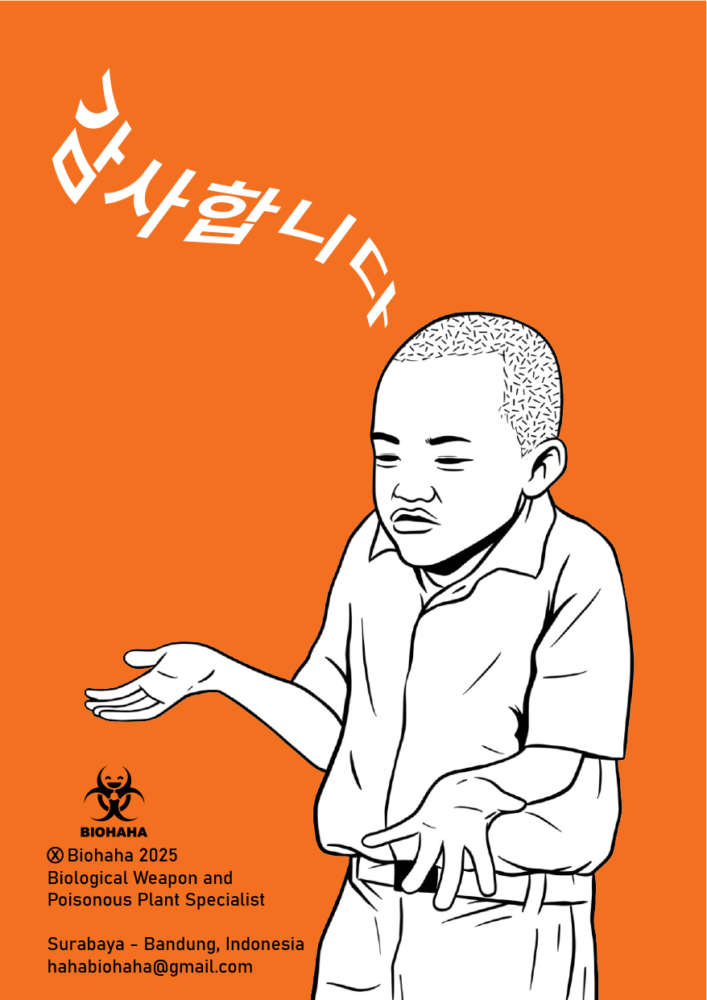

This project unfolds in three phases:
// Sensewalking & Mapping – Participants explore ACC - Asia Culture Center through embodied perception, documenting their experiences through sketches, sound patterns, textures, and bodily sensations. These observations are converted into a graphic score, capturing an intersubjective experience of the city.
// DIY Bio-Synth Workshop – Participants assemble a light-sensitive synthesizer, establishing a connection between visual stimuli and sound.
// Collective Audio-Visual Performance – The generated score serves as a guide for an improvised performance in public space, merging movement, sound, and visual projections into an intersubjective ecology between body, space, and technology.
This project highlights spontaneity, perception, and intersubjectivity, fostering an egalitarian interaction between the city and its inhabitants. By positioning the city as a "living instrument," Sensewalking Flux celebrates the unpredictability that emerges from the ecotone between body, space, and technology.
Open Learn ACC
An educational event for artists and creators who are expanding the boundaries of creativity through new media technologies
Open Learn ACC
Period: July 11, 2025 (Fri) - July 13, 2025 (Sun)
Hour: 10:00 - 20:00 * Please refer to the detailed times for each program
Location: Cultural Information Center B4 Creative Production Studio
Target: Artists, creators, art and new media students, etc.
Personnel: Varies by program
Application: Online application via Google Form
Inquiry: 062-601-4312
Tuition fees: free
Guide: To account for the rate of duplicate applications, some programs are temporarily extending their application deadlines.
etc: ※ Some programs can be applied for until 6:00 PM on Wednesday, July 9th.

Open Learn ACC
Open Learn ACC
Open Learn ACC is a learning platform that expands the possibilities of artistic creation through new media technologies. It offers a variety of programs, including lectures, workshops, and talks, for artists, creators, and students majoring in art and new media. Participants explore artistic practices within a contemporary technological environment and explore new directions in their work. This event prioritizes collaborative learning and experimentation over general knowledge transfer. Participants expand their creative perspectives and expressions through diverse experimentation and interpretation. Open Learn ACC is a program for those exploring creative directions through technology and art.

Program Guide
Open Learn ACC is designed to accommodate a variety of program types and participant's experiences and interests.
Type Guide
Talk: A theory-focused session sharing the perspectives of contemporary artists and experts on the convergence of art and technology.
Tool Preview: Digital tool basic experience session for beginners.
Workshop: A hands-on creative session that directly deals with new media technologies.
Tech Talk: A thought-driven, interactive session exploring the concepts and philosophy of technology.
Performance: Experimental live performances that breathe together with the audience.

Recommended for:
Exploratory >> This course is for artists and creators who want to experience new technologies and tools.
Discovery type >> This program is for creators and artists who want to experiment with various techniques and discover their own ideas.
Expandable >> This is an advanced course for artists and creators who wish to develop their work through creative experimentation and in-depth learning.
Note:
※ All programs require advance registration. On-site registration without prior registration is not permitted.
※ Please be sure to check the application target and number of applicants for each program through the Google Form application form.
※ Some programs may require additional supplies. Please bring the required supplies listed in the recruitment guide.
※ To prevent unauthorized absences, please contact us in advance to cancel.
※ Some programs operate on a selection basis, and after reviewing your application, you will be individually notified of your participation status.
※ Parking is not provided for this training. Parking is limited, so we recommend using public transportation.
Inquiry
Cultural Education Department 062-601-4312

Walking in the flow of senses 감각의 흐름 속 걷기
This workshop is for artists who want to explore the city through their bodily senses and translate those experiences into sound. They will create visual scores based on sensory walking and documentation, and experiment with the connections between the city, technology, and the senses through DIY biosynths they assembled themselves.
Co-founded by Bandung-based media artists Helmi Hardian and Angela Sunaryo, Biohaha is a collaborative platform exploring the boundaries of biology, technology, and subculture. They continue their ecologically centered artistic practice through sound, walking, and performance-based mapping, exploring the city and nature.
DIY Bio-Synth Workshop
Let’s Make the City Sing!
After we dive into the partiture of an environment around Asia Culture Center area, we need a way to translate the unseen—light, movement, and energy—into something we can hear. That’s where DIY Bio-Synths come in!
What’s a Bio-Synth?
Think of it as a tiny electronic creature that listens to the world in ways we can’t. Instead of using a microphone, it captures light intensity and turns it into sound. The brighter the light, the louder or higher the pitch—kind of like the city humming its own tune!
What We’ll Do
// Assemble Your Synth – We’ll guide you through building a simple bio-synth using sensors, circuits, and a bit of magic.
// Experiment with Light & Sound – Wave your hands, block the light, or let the sunset play its own melody.
// Prepare for Collective Composition – The bio-synths will later be used in Phase 3, where we’ll translate the sensewalking partiture into a live sound performance.
Why This Matters?
This isn’t just about making cool noises (though that’s a bonus). It’s about expanding perception, listening to the environment beyond human senses, and finding new ways to interact with urban space.
Ready to tune in? Let’s build, explore, and make the city sing!

DIY Bio-Synth Instruction Manual
Composition Structure
Like a city breathing in cycles, the piece unfolds in three evolving phases:
I. PER SENSES – Structured Exploration
Follow the path. Performers closely trace the drawn lines on their acetate sheets. Let your touch guide the light, let the synths whisper what they sense. This phase is about precision, listening, and feeling the city as it is.
II. UNISON – Free Interaction
Loosen up! Break free from strict paths. Explore textures, alter light exposure, interact with the sonic space. The city is alive—let it breathe through you.
III. DISRUPTION – Environmental Interference
External light sources shift, shadows block paths, sudden brightness challenges control. Adapt, respond, and find harmony in the chaos. The composition is no longer just yours—it belongs to the space, to unseen forces at play.
Beyond Sound: Live Processing
Throughout the performance, digital elements enhance the experience:
// Live Sound Engineering – Mixing raw DIY synth outputs, adding textures, effects, and spatial depth.
// Visual & LED Mapping – Reacting to performers’ gestures, transforming light distortions into projected visuals.
You Are Part of the City
ACC Gwangju is not just a backdrop—it’s the instrument. Through Sensewalking Flux, we dissolve the lines between performer, space, and observer. We play the unseen frequencies of the building, sculpting them into fleeting moments of sound and light.
So, let’s listen with our hands, see with our ears, and move through light.
Let the flux begin!
Sensewalking Flux - ACC Gwangju Documentation
Phase 1 – Sensewalking & Mapping
"Observing the environment around Asia Culture Center Gwangju through the senses—textures, movements, sounds, and the shifting rhythm of the space."
ACC, Gwangju | 13 July 2025
Reflections on Sensewalking Flux
Phase 1: Sensewalking & Mapping
ACC Gwangju is a living archive of sensations—an intricate choreography of textures, movements, and sonic landscapes. In this phase, participants engaged in analytical sketching, using a structured framework to translate their sensory experiences into visual notations.
Interestingly, observations extended beyond static elements like tree bark or fabric textures; many were drawn to the movement of people—the fluidity of pedestrian rhythms, the micro-gestures of those pausing, waiting, or weaving through the streets. The interplay between overstimulation and stillness emerged as a key theme. A sudden downpour, for example, momentarily shifted the tempo of the environment, creating an unplanned moment of reflection.
Sensewalking Flux Documentation
Phase 2 – DIY Bio-Synth Workshop
"Building, tweaking, and experimenting—participants shape sound through circuits and collaboration."
ACC, Gwangju | 13 July 2025
Reflections on Sensewalking Flux
Phase 2: DIY Bio-Synth Workshop
From perceiving to producing—this phase invited participants to engage with sound through hands-on synthesis. The workshop was designed as a structured introduction to DIY electronic instruments, but participants quickly transformed it into a space for collaboration and improvisation.
Rather than merely assembling circuits, many took an experimental approach, testing the limits of their synths—adding, removing, modifying, and reconfiguring components. This iterative process mirrored the unpredictability of sound itself: a circuit glitch became a new sonic texture; an unexpected interaction between components sparked a new idea. In this way, the workshop embodied an open-ended methodology, where learning occurred through tactile engagement, failure, and adaptation.
Phase 3 – Collective Audio-Visual Performance
"From scattered sounds to a shared composition—listening, responding, and making ACC Gwangju resonate."
ACC, Gwangju | 13 July 2025
Reflections on Sensewalking Flux
Phase 3: Collective Audio-Visual Performance
This improvisatory sound-making session transformed the city into an active collaborator. Rather than imposing a fixed composition, participants engaged in a dialogue with the space—responding to environmental sounds, each other, and the unpredictable resonances emerging from their instruments. The performance revealed a critical insight: deep listening is not merely receptive but generative; it is a practice of both attunement and intervention.
By the end of Sensewalking Flux, the distinction between observer and participant, listener and performer had blurred. What began as a structured exercise in sensory awareness evolved into a collective exploration of how we experience and reimagine our surroundings.
The question that remains: How will you continue to listen?

Credits: Documentation: Biohaha, Women Open Tech Lab, ACC Gwangju